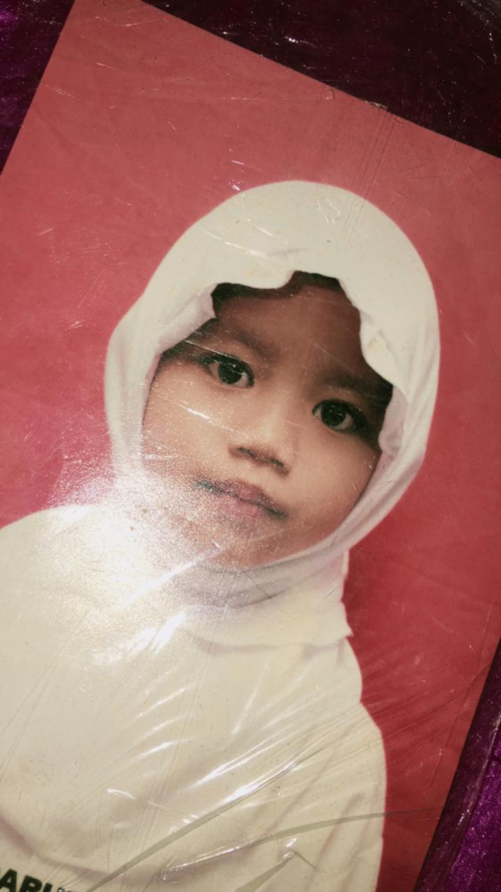

Selamat Ulang Tahun Sayang
Selamat Ulang Tahun yang udah kayak sayang ilam, pacar ilam, temen ilam, ibu ilam, musuh ilam, sahabat ilam, partner bisnis ilam, guru ilam, kasih ilam, kecoa ilam, harum ilam, cinta ilam, alarm ilam, pengingat ilam, partner nongki ilam, dll ilam.
Alhamdulillah bisa ngerasain 21 tahun bareng keluarga dengan suasana yang ima harapkan kayak tahun tahun sebelumnya, seru banget gak sih jalan" di jawa tengah bareng figo pula. Ilam jadi seneng juga kalo ima seneng, ima seneng terus yaa jangan sedih". Cari kebahagian diluar sana, gausah terlalu berharap sama ilam yang kampret ini. Dan akhirnya juga jalan di jawa bisa pegang iphone ++ jadi bisa foto + video yang kece". sehat" terus yaaa. Panjang umurr kitaa Alhamdulillahirabbilalamin
Semoga di tahun yang baru ini, ima bisa jadi diri ima sendiri. Semoga papah tambah sayang, dijauhkan dari konflik sama mamah. Semoga tambah cantik terus, biar kece gak sih. Semoga egoisnya bisa dikontrol bareng, demi keberlangsungan hidup yang lebih baik. Semoga ditambah sayang ilam, rejekinya makin berlimpah ruah. Dan yang disemogakan tersemogakan. Aamiin...
Pesan ilam cuma 1, nanti ilam kasih tau di part 2...
Terakhir dari ilam, kapan ya ilam sembuh sakitnya ini? Cape sakit terus :)
